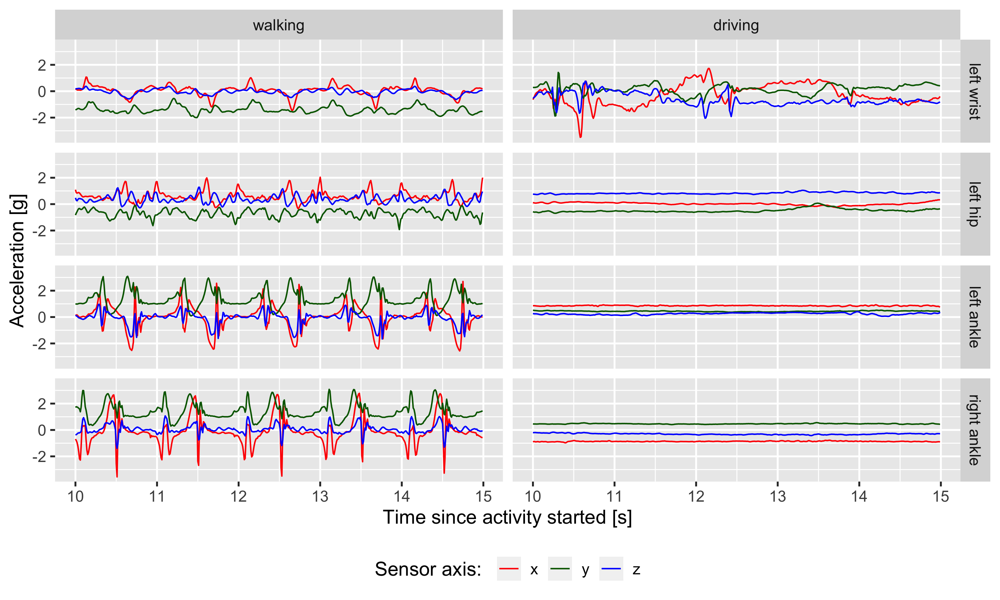
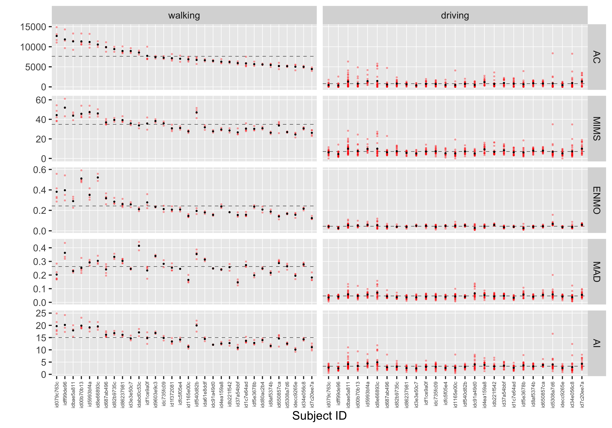

Computing minute-level summary measures of physical activity from raw accelerometry data in R: AC, MIMS, MAD, and AI
In this post, we:
-
use dataset “Labeled raw accelerometry data captured during walking, stair climbing and driving” that is freely available on PhysioNet;
-
derive four minute-level summary measures of physical activity – AC, MIMS, MAD, AI – from raw accelerometry data using
SummarizedActigraphyR package; -
summarize minute-level summary measures across walking and driving activities.
Table of Contents
Dataset “Labeled raw accelerometry data”
The dataset contains raw accelerometry data collected during outdoor walking, stair climbing, and driving for n=32 healthy adults. It is freely is available to download on PhysioNet at: https://doi.org/10.13026/51h0-a262
- The study was led by Dr. Jaroslaw Harezlak, assisted by Drs. William Fadel and Jacek Urbanek.
- Accelerometry data were collected simultaneously at four body locations: left wrist, left hip, left ankle, and right ankle, at a sampling frequency of 100 Hz.
- The 3-axial ActiGraph GT3X+ devices were used to collect the data.
- The data include labels of activity type performed for each time point of data collection (1=walking; 2=descending stairs; 3=ascending stairs; 4=driving; 77=clapping; 99=non-study activity).
We downloaded the data zip from PhysioNet and unpacked. This can be done manually from the website, or using download the data programmatically.
(Click to see the code to download the data.)
url <- paste0(
"https://physionet.org/static/published-projects",
"/accelerometry-walk-climb-drive",
"/labeled-raw-accelerometry-data-captured-during-walking-stair-climbing-and-driving-1.0.0.zip")
destfile <- paste0(
"/Users/martakaras/Downloads",
"/labeled-raw-accelerometry-data-captured-during-walking-stair-climbing-and-driving-1.0.0.zip")
# download zip
result <- curl::curl_download(url, destfile = destfile, quiet = FALSE)
# unzip zip
unzip(zipfile = destfile, exdir = dirname(destfile))
First, let’s look at raw accelerometry data of a single subject.
(Click to see the code.)
library(tidyverse)
library(lubridate)
library(lme4)
library(knitr)
# remotes::install_github("muschellij2/SummarizedActigraphy")
library(SummarizedActigraphy)
library(MIMSunit)
library(activityCounts)
options(digits.secs = 3)
options(scipen=999)
# define path to raw data files directory
raw_files_dir <- paste0(
"/Users/martakaras/Downloads",
"/labeled-raw-accelerometry-data-captured-during-walking-stair-climbing-and-driving-1.0.0",
"/raw_accelerometry_data")
# single participant's raw accelerometry data
dat_fpaths <- list.files(raw_files_dir, full.names = TRUE)
dat_i <- read_csv(dat_fpaths[1])
dat_i
# A tibble: 303,300 x 14
activity time_s lw_x lw_y lw_z lh_x lh_y lh_z la_x la_y la_z ra_x ra_y ra_z
<dbl> <dbl> <dbl> <dbl> <dbl> <dbl> <dbl> <dbl> <dbl> <dbl> <dbl> <dbl> <dbl> <dbl>
1 99 0.01 0.039 1.02 -0.02 -0.18 1.23 0.023 0.156 0.855 -0.582 0.887 0.449 0.074
2 99 0.02 -0.629 -0.461 0.973 -0.246 0.137 0.969 -0.707 0.559 0.449 -0.027 0.141 0.934
3 99 0.03 -0.926 -1.26 0.691 0.238 -0.328 1.22 -1.44 1.37 0.367 -0.164 0.66 1.34
4 99 0.04 -0.871 -1.50 -0.246 0.711 -0.484 0.414 -1.66 1.64 -0.543 -0.141 1.03 0.707
5 99 0.05 -0.727 -1.62 -0.559 1.03 -0.297 0.145 -1.76 1.68 -0.918 -0.121 1.23 0.438
6 99 0.06 -0.543 -1.66 -0.629 1.12 -0.246 0.137 -1.80 1.65 -0.988 -0.051 1.42 0.371
7 99 0.07 -0.348 -1.64 -0.609 1.24 -0.426 0.047 -1.76 1.57 -0.992 0.09 1.63 0.383
8 99 0.08 -0.16 -1.60 -0.566 1.18 -0.539 -0.008 -1.63 1.53 -1.02 0.25 1.83 0.387
9 99 0.09 -0.012 -1.53 -0.523 1.03 -0.633 -0.043 -1.13 1.87 -0.738 0.363 2 0.328
10 99 0.1 0.117 -1.43 -0.484 0.922 -0.766 -0.047 0.285 1.37 -0.156 0.473 2.13 0.203
# … with 303,290 more rows
Each file contains 14 variables:
activity– type of activity (1=walking; 2=descending stairs; 3=ascending stairs; 4=driving; 77=clapping; 99=non-study activity);time_s– time from device initiation (seconds [s]);lw_x,lw_y,lw_z– acceleration [g] measured by a left wrist-worn sensor at axis x, y, z;lh_x,lh_y,lh_z– acceleration [g] measured by a left hip-worn sensor at axis x, y, z;la_x,la_y,la_z– acceleration [g] measured by a left ankle-worn sensor at axis x, y, z;ra_x,ra_y,ra_z– acceleration [g] measured by a right ankle-worn sensor at axis x, y, z.
An exemplary few seconds of raw data from of walking and driving activities, collected by sensors at four different locations:
(Click to see the code.)
loc_id_levels <- c("lw", "lh", "la", "ra")
loc_id_labels <- c("left wrist", "left hip", "left ankle", "right ankle")
activity_levels <- c("walking", "driving")
plt_df <-
dat_i %>%
filter(activity %in% c(1,4)) %>%
group_by(activity) %>%
mutate(time_s = time_s - min(time_s)) %>%
ungroup() %>%
filter(time_s >= (5 + 5), time_s < (5 + 10)) %>%
mutate(activity = recode(activity, '1' = 'walking', '4' = 'driving')) %>%
pivot_longer(cols = -c(activity, time_s)) %>%
separate(name, c("loc_id", "axis_id"), sep = "_") %>%
mutate(activity = factor(activity, levels = activity_levels)) %>%
mutate(loc_id = factor(loc_id, levels = loc_id_levels, labels = loc_id_labels))
plt_raw_data <-
ggplot(plt_df, aes(x = time_s, y = value, color = axis_id)) +
geom_line() +
facet_grid(loc_id ~ activity) +
scale_y_continuous(limits = c(-1, 1) * max(abs(plt_df$value))) +
labs(y = "Acceleration [g]",
x = "Time since activity started [s]",
color = "Sensor axis: ") +
theme_gray(base_size = 14) +
theme(legend.position="bottom") +
scale_color_manual(values = c("red", "darkgreen", "blue"))
plt_raw_data

Computing minute-level summary measures of raw accelerometry data
Summary measures
A number of open-source measures have been proposed to aggregate subsecond-level accelerometry data. These include:
- Monitor Independent Movement Summary (MIMS) (John et al., 2019),
- Mean Amplitude Deviation (MAD) (Vähä-Ypyä et al., 2015),
- Activity Index (AI) (Bai et al., 2016).
In addition, attempts have been made to reverse-engineer proprietary activity counts (AC) generated by ActiLife software from data collected by ActiGraph accelerometers. These include:
activityCountsR package – allows generating “ActiLife counts from raw acceleration data for different accelerometer brands and it is developed based on the study done by Brond et al., 2017”.
SummarizedActigraphy R package
We derive the measures using SummarizedActigraphy R package. The
package was authored by John Muschelli
and is available on GitHub
(link).
It uses some of the existing R software under the hood to compute some part of the measures:
MIMSunitR package to compute MIMS,activityCountsR package to compute AC.
It computes some other measures straightfoward from their definition, e.g.: MAD, AI.
Preparing the data input
We use raw accelerometry data from a wrist-worn sensor.
(Click to see notes and code.)
Note:
SummarizedActigraphyR package needs data with observation timestamp in the form ofPOSIXctclass. This timestamp column must be namedHEADER_TIME_STAMP; the specific column naming is needed due to some issue reported forMIMSunitR package.- We hence create a “fake”
POSIXctcolumn namedHEADER_TIME_STAMP. - The option
options(digits.secs = 3)was used on the top of this R script to allow displaying decimal time part.
We first demonstrate the code for one participant.
dat_input_i <-
dat_i %>%
mutate(HEADER_TIME_STAMP = seq(from = ymd_hms("2021-01-01 00:00:00"), by = 0.01, length.out = nrow(dat_i))) %>%
select(HEADER_TIME_STAMP, X = lw_x, Y = lw_y, Z = lw_z)
dat_input_i
# A tibble: 303,300 x 4
HEADER_TIME_STAMP X Y Z
<dttm> <dbl> <dbl> <dbl>
1 2021-01-01 00:00:00.000 0.039 1.02 -0.02
2 2021-01-01 00:00:00.009 -0.629 -0.461 0.973
3 2021-01-01 00:00:00.019 -0.926 -1.26 0.691
4 2021-01-01 00:00:00.029 -0.871 -1.50 -0.246
5 2021-01-01 00:00:00.039 -0.727 -1.62 -0.559
6 2021-01-01 00:00:00.049 -0.543 -1.66 -0.629
7 2021-01-01 00:00:00.059 -0.348 -1.64 -0.609
8 2021-01-01 00:00:00.069 -0.16 -1.60 -0.566
9 2021-01-01 00:00:00.079 -0.012 -1.53 -0.523
10 2021-01-01 00:00:00.089 0.117 -1.43 -0.484
# … with 303,290 more rows
We use package’s helper function to check if sample rate is being determined correctly (should be 100 Hz).
get_sample_rate(dat_input_i)
[1] 100
Computing the measures
We calculate minute-level summary measures: AC, MIMS, MAD, AI. The output shows values of the measures per each minute.
out_i = SummarizedActigraphy::calculate_measures(
df = dat_input_i,
dynamic_range = c(-8, 8), # dynamic range
fix_zeros = FALSE, # fixes zeros from idle sleep mode -- not needed in our case
calculate_mims = TRUE, # uses algorithm from MIMSunit package
calculate_ac = TRUE, # uses algorithm from activityCounts package
flag_data = FALSE, # runs raw data quality control flags algorithm -- not used in our case
verbose = FALSE)
=================================================================================================================
out_i <- out_i %>% select(HEADER_TIME_STAMP = time, AC, MIMS = MIMS_UNIT, MAD, AI)
out_i
# A tibble: 51 x 5
HEADER_TIME_STAMP AC MIMS MAD AI
<dttm> <dbl> <dbl> <dbl> <dbl>
1 2021-01-01 00:00:00.000 3623. 19.3 0.140 7.62
2 2021-01-01 00:01:00.000 2460. 14.8 0.0971 5.84
3 2021-01-01 00:02:00.000 648. 6.52 0.0192 2.44
4 2021-01-01 00:03:00.000 36.2 1.86 0.00862 1.03
5 2021-01-01 00:04:00.000 8084. 34.8 0.316 15.1
6 2021-01-01 00:05:00.000 13845. 60.1 0.358 25.3
7 2021-01-01 00:06:00.000 10549. 44.1 0.248 18.7
8 2021-01-01 00:07:00.000 11219. 45.8 0.244 19.6
9 2021-01-01 00:08:00.000 11624. 51.6 0.338 22.1
10 2021-01-01 00:09:00.000 11049. 45.8 0.288 20.0
# … with 41 more rows
Next, we calculate the measures for all n=32 subjects.
(Click to see the code.)
out_all <- data.frame()
for (dat_fpath_i in dat_fpaths){ # dat_fpath_i <- dat_fpaths[1]
message(basename(dat_fpath_i))
# read data
basename_i <- gsub(".csv", "", basename(dat_fpath_i))
dat_i <- read.csv(dat_fpath_i)
# prepare data input
ts_i <- seq(from = ymd_hms("2021-01-01 00:00:00"), by = 0.01, length.out = nrow(dat_i))
dat_input_i <-
dat_i %>%
mutate(HEADER_TIME_STAMP = ts_i) %>%
select(HEADER_TIME_STAMP, X = lw_x, Y = lw_y, Z = lw_z)
# compute the measures
out_i = SummarizedActigraphy::calculate_measures(
df = dat_input_i,
dynamic_range = c(-8, 8), # dynamic range
fix_zeros = FALSE, # fixes zeros from idle sleep mode -- not needed in our case
calculate_mims = TRUE, # uses algorithm from MIMSunit package
calculate_ac = TRUE, # uses algorithm from activityCounts package
flag_data = FALSE, # runs raw data quality control flags algorithm -- not used in our case
verbose = FALSE)
out_i <- out_i %>% select(HEADER_TIME_STAMP = time, AC, MIMS = MIMS_UNIT, MAD, AI)
out_i <- mutate(out_i, subj_id = basename_i, .before = everything())
# append subject-specific measures to all subjects file
out_all <- rbind(out_all, out_i)
}
Minute-level physical activity measures during walking and driving activities
Merging physical activity measures with physical activity labels
Next, we merge the minute-level physical-activity measures with the activity labels. We only keep the minutes for which all the measurements were labelled with no more than one type of activity.
(Click to see the code.)
labels_df_all <- data.frame()
for (dat_fpath_i in dat_fpaths){ # dat_fpath_i <- dat_fpaths[1]
message(basename(dat_fpath_i))
# read data
basename_i <- gsub(".csv", "", basename(dat_fpath_i))
dat_i <- read.csv(dat_fpath_i)
# aggregate activity labels
ts_i <- seq(from = ymd_hms("2021-01-01 00:00:00"), by = 0.01, length.out = nrow(dat_i))
labels_df_i <-
dat_i %>%
mutate(HEADER_TIME_STAMP = ts_i) %>%
mutate(HEADER_TIME_STAMP = lubridate::floor_date(HEADER_TIME_STAMP, "1 min")) %>%
group_by(HEADER_TIME_STAMP) %>%
filter(n_distinct(activity) == 1) %>%
filter(row_number() == 1) %>%
# 1=walking; 2=descending stairs; 3=ascending stairs; 4=driving
filter(activity %in% c(1,2,3,4)) %>%
ungroup() %>%
select(HEADER_TIME_STAMP, activity)
labels_df_i <- mutate(labels_df_i, subj_id = basename_i, .before = everything())
# append subject-specific measures to all subjects file
labels_df_all <- rbind(labels_df_all, labels_df_i)
}
# recode activity label
labels_df_all <- labels_df_all %>%
mutate(activity = recode(activity, '1' = 'walking', '2' = 'descending_stairs',
'3' = 'ascending_stairs', '4' = 'driving'))
# merge:
# (1) physical activity minute-level measures,
# (2) physical activity minute-level activity labels
out_all_merged <-
out_all %>%
inner_join(labels_df_all, by = c("subj_id", "HEADER_TIME_STAMP"))
out_all_merged
# A tibble: 686 x 7
subj_id HEADER_TIME_STAMP AC MIMS MAD AI activity
<chr> <dttm> <dbl> <dbl> <dbl> <dbl> <chr>
1 id00b70b13 2021-01-01 00:06:00.000 10549. 44.1 0.248 18.7 walking
2 id00b70b13 2021-01-01 00:07:00.000 11219. 45.8 0.244 19.6 walking
3 id00b70b13 2021-01-01 00:11:00.000 11026. 42.3 0.215 18.9 walking
4 id00b70b13 2021-01-01 00:12:00.000 10561. 42.1 0.231 19.1 walking
5 id00b70b13 2021-01-01 00:13:00.000 13297. 53.9 0.325 23.1 walking
6 id00b70b13 2021-01-01 00:21:00.000 2603. 14.5 0.0413 4.80 driving
7 id00b70b13 2021-01-01 00:23:00.000 499. 6.65 0.0537 3.59 driving
8 id00b70b13 2021-01-01 00:24:00.000 398. 6.06 0.0496 3.49 driving
9 id00b70b13 2021-01-01 00:25:00.000 130. 5.92 0.0560 3.67 driving
10 id00b70b13 2021-01-01 00:26:00.000 414. 7.00 0.0561 3.55 driving
# … with 676 more rows
table(out_all_merged$activity)
driving walking
569 117
Visualizing physical activity measures across activity types
We visualize values of minute-level physical activity measures. Note these only used data collected with a sensor located at left wrist.
(Click to see the code.)
name_levels <- c("AC", "MIMS", "MAD", "AI")
activity_levels <- c("walking", "driving")
# define data subsets with one activity type only
df_walk <- out_all_merged %>% filter(activity == "walking")
df_driv <- out_all_merged %>% filter(activity == "driving")
# estimate sample population mean for each measure via LMM
measure_mean_vals <- c(
# walking
fixef(lmer(AC ~ (1 | subj_id), data = df_walk))[1],
fixef(lmer(MIMS ~ (1 | subj_id), data = df_walk))[1],
fixef(lmer(MAD ~ (1 | subj_id), data = df_walk))[1],
fixef(lmer(AI ~ (1 | subj_id), data = df_walk))[1],
# driving
fixef(lmer(AC ~ (1 | subj_id), data = df_driv))[1],
fixef(lmer(MIMS ~ (1 | subj_id), data = df_driv))[1],
fixef(lmer(MAD ~ (1 | subj_id), data = df_driv))[1],
fixef(lmer(AI ~ (1 | subj_id), data = df_driv))[1]
)
measure_mean_df <- data.frame(
value = measure_mean_vals,
name = rep(name_levels, times = 2),
activity = rep(activity_levels, each = 4)
)
measure_mean_df_w <-
measure_mean_df %>%
mutate(value = round(value, 2)) %>%
pivot_wider(names_from = activity)
# define subject-specific means
out_all_l <-
out_all_merged %>%
pivot_longer(cols = all_of(name_levels))
out_all_l_agg <-
out_all_l %>%
group_by(subj_id, name, activity) %>%
summarise(value = mean(value))
subj_id_levels <-
out_all_l_agg %>%
filter(name == "AC", activity == "walking") %>%
arrange(desc(value)) %>%
pull(subj_id)
# mutate data frames used on the plot to have factors at certain levels order
measure_mean_df <-
measure_mean_df %>%
mutate(activity = factor(activity, levels = activity_levels)) %>%
mutate(name = factor(name, levels = name_levels))
out_all_l <-
out_all_l %>%
mutate(subj_id = factor(subj_id, levels = subj_id_levels),
activity = factor(activity, levels = activity_levels)) %>%
mutate(name = factor(name, levels = name_levels))
out_all_l_agg <-
out_all_l_agg %>%
mutate(subj_id = factor(subj_id, levels = subj_id_levels),
activity = factor(activity, levels = activity_levels)) %>%
mutate(name = factor(name, levels = name_levels))
First, we estimated sample population mean for each minute-level measure via linear mixed model (LMM).
kable(measure_mean_df_w)
| name | walking | driving |
|---|---|---|
| AC | 7616.48 | 801.15 |
| MIMS | 34.86 | 7.10 |
| MAD | 0.26 | 0.05 |
| AI | 15.01 | 3.31 |
Next, we plot minute-level physical activity measures:
- individual measure values (red) for each subject,
- mean measure value (black) for each subject,
- sample population mean for each measure (dashed horizontal line) estimated via LMM.
On each plot panel, subject IDs (x-axis) are sorted by average AC during walking (left-top plot panel).
(Click to see the code.)
plt_measures <-
ggplot(out_all_l,
aes(x = subj_id, y = value)) +
geom_hline(data = measure_mean_df,
aes(yintercept = value),
linetype = 2, size = 0.2) +
geom_point(size = 0.5, alpha = 0.3, color = "red") +
geom_point(data = out_all_l_agg,
aes(x = subj_id, y = value),
size = 0.5, color = "black") +
facet_grid(name ~ activity, scales = "free") +
labs(x = "Subject ID", y = "") +
theme_gray(base_size = 14) +
theme(panel.grid.major = element_line(size = 0.3),
panel.grid.minor = element_blank(),
axis.text.x = element_text(size = 6, angle = 90, vjust = 0.5, hjust = 1))
plt_measures

The above plot highlights what are minute-level summary measures of physical activity from raw accelerometry data: AC, MIMS, MAD, and AI, across two different activities (walking, driving) in the study sample of n=32 healthy individuals.
Acknowledgements
I’d like to thank John Muschelli for feedback on this tutorial.
Citation info
Please cite SummarizedActigraphy R package, if applicable.
Please cite raw accelerometry dataset DOI, if applicable (go to see this dataset citation options).